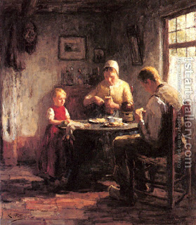

Bava Kamma 111 - Stealing for One's Children
Twenty-four priestly gifts were given to Aaron and his sons, and they were given with a "generalization-specification-generalization" rule. One who upholds these gifts is considered as though he upheld the whole Torah, which is exposed with this rule.
If one robs something and feeds it to his children, they are not liable to pay. If he left the item as inheritance, they have to return it. Once the stolen property is no longer extant, they are not liable to return it, unless the father left also real property - for it is then mortgaged for his theft.